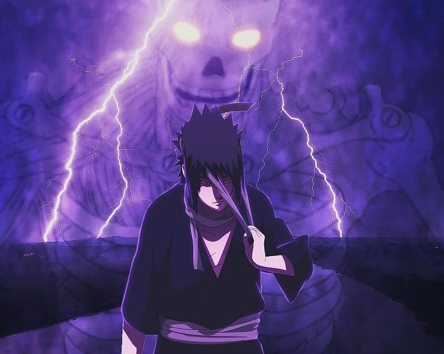

Sasuke
Sasuke é um dos últimos sobreviventes do clã Uchiha, um dos mais poderosos da Vila da Folha. Quando era criança, ele viu seu irmão mais velho, Itachi Uchiha, massacrar todo o seu clã. Isso fez Sasuke crescer com um único objetivo: vingança. Na academia ninja, ele se torna um dos melhores alunos e entra no Time 7 junto com Naruto Uzumaki e Sakura. Apesar de começar a criar laços com eles, Sasuke se sente fraco por não conseguir superar seu irmão. Obcecado por poder, ele abandona a vila e se junta a Orochimaru, buscando força a qualquer custo. Mais tarde, ele finalmente enfrenta Itachi — mas descobre a verdade: seu irmão matou o clã por ordem da vila, para evitar uma guerra. Isso muda completamente a visão de Sasuke. Revoltado com a Vila da Folha, ele decide destruí-la. Durante esse caminho, ele entra em conflitos com Naruto várias vezes, já que Naruto tenta salvá-lo. No final, após uma grande batalha contra Naruto, Sasuke percebe seus erros e decide mudar. Ele busca redenção, passando a proteger a vila de forma mais silenciosa, ajudando nas sombras.
